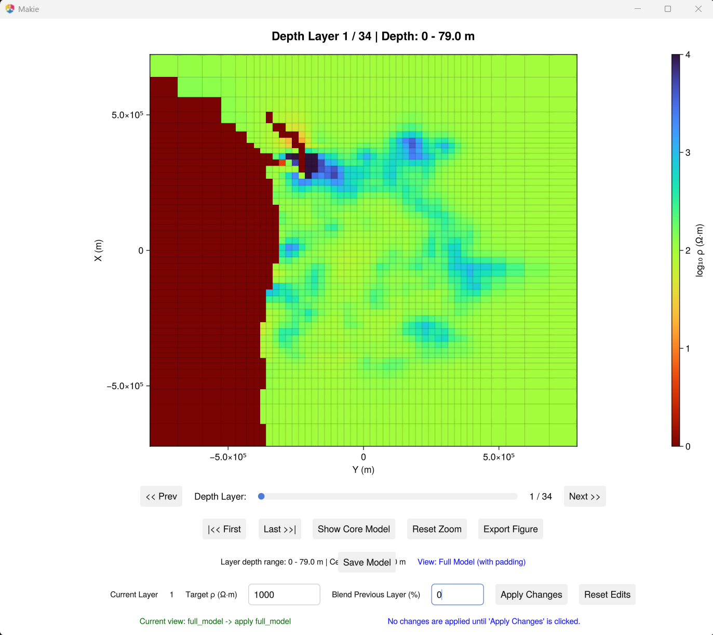
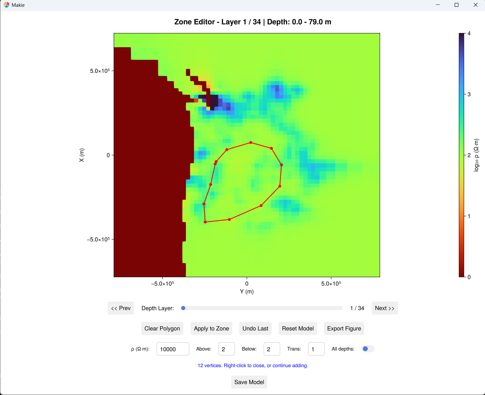

Model Editing
Interactive tools for modifying 3D resistivity models with visual feedback.
Replace slice resistivity
Replace resistivity below a chosen depth layer, with control over whether the edit applies to the core model only or to the full model including lateral padding.
julia --project=. examples/replace_slice_resistivity_scope.jl
Workflow
- The script loads a ModEM model and opens an interactive depth-slice viewer.
- Use the depth slider to navigate to the layer you want as the cutoff.
- Enter a target resistivity (Ω·m) and an optional blend percentage for the layer above the cutoff.
- Toggle between core-only and full-model scope with the Show Core Model / Show Full Model button.
- Click Apply Changes to modify the model in memory.
- Click Save Model to write the edited model to disk.
Configuration
Edit the variables at the top of the script:
model_file = joinpath(@__DIR__, "Cascadia", "cascad_half_inverse.ws")
target_resistivity = 1000.0 # replacement value (Ω·m)
blend_previous_percent = 0 # 0-100, blend the layer above cutoff
replace_scope = :core_only # or :full_model
log10_scale = true
colormap = Reverse(:turbo)
with_padding = true
max_depth = nothing # nothing = show all layers
resistivity_range = (0.0, 4.0) # log₁₀ scale colour limitsOutput
Saved models include metadata in the header:
<model_name>_modified_layer<N>_rho<R>_blendprev<B>_coreonly.rhoDraw and replace zones
Draw polygon zones on depth slices and replace resistivity within selected depth intervals. Supports undo, transition layers, and optional all-depths mode.
julia --project=. examples/draw_and_replace_in_model.jl
Workflow
- The script loads a ModEM model and opens a zone editor.
- Left-click to add polygon vertices on the depth slice.
- Right-click to close the polygon.
- Set the target resistivity, layers above/below, and transition layers.
- Toggle All depths to apply the replacement across all layers.
- Click Apply to Zone to modify the model in memory.
- Use Undo to revert, or Reset Model to restore the original.
- Click Save Model to write the edited model to disk.
Configuration
Edit the variables at the top of the script:
model_file = joinpath(@__DIR__, "Cascadia", "cascad_half_inverse.ws")
replacement_resistivity = 10000.0
layers_above = 2
layers_below = 2
transition_layers = 1
apply_to_all_depths = falseExperimental editing scripts
Additional interactive scripts for manual model modification:
| Script | Description |
|---|---|
edit_model_by_slice.jl | Bulk-replace resistivity below a cutoff layer |
edit_model_by_drawing.jl | Draw polygon zones on slices to replace resistivity |
These are more development-oriented and may require local path adjustments.